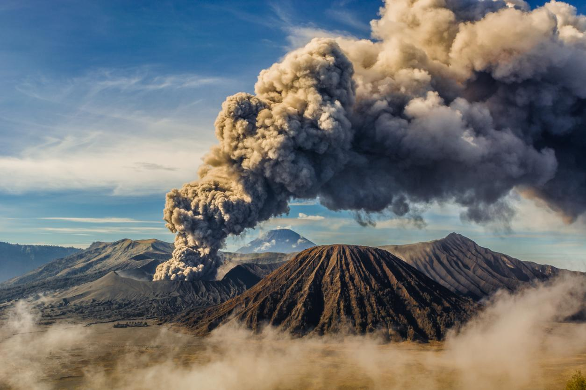
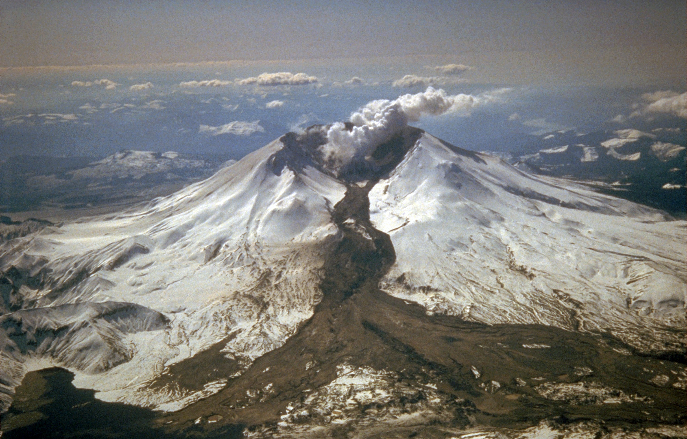

Cuando la lava expulsada por el volcán es fluida, de tipo hawaiano, el volcán adquiere una forma de una estructura amplia y abovedada, que por su apariencia se los denomina en escudo.
Los volcanes de escudo se asemejan a la superficie superior de un escudo que reposara en el suelo con el lado convexo hacia arriba.
Un volcán en escudo está formado principalmente por lavas basálticas (ricas en hierro) y poco material piroclastico. El mayor volcán de la Tierra es el Mauna Loa, un volcán en escudo en las islas Hawái. El Mauna Loa nace en las profundidades del mar, a unos 5 km y se eleva sobre el nivel del mar por unos 4170 m.
Los volcanes en escudo como el Mauna Loa se forman a lo largo de millones de años gracias a ciclos de erupciones de lava que se van superponiendo unas con otras.
El volcán de escudo más activo es el Kīlauea, localizado en la Isla de Hawái, al lado de Mauna Loa. En el período histórico el Kilauea ha entrado unas 50 veces en erupción y es, por lo tanto, el volcán de este tipo más estudiado.
El resultado de erupciones constantes durante millones de años ha dado lugar a la creación de las montañas más grandes de la Tierra (si se tiene en cuenta la altura contando desde la base en el lecho marino). Por ejemplo, el Mauna Loa, desde su base submarina hasta su cúspide, cuenta con una altura de 9,5 km, más alto que el monte Everest.
Los geólogos creen que las primeras etapas de formación de los volcanes en escudo consisten en erupciones frecuentes de delgadas coladas de Basalto muy líquidas. Además de estas erupciones también se producen erupciones laterales. Normalmente con el cese de cada fase eruptiva se produce el hundimiento del área de la cima. En las últimas fases, las erupciones son más esporádicas y la erupción piroclástica se hace más frecuente. A medida que esto sucede, las coladas de lava tienden a ser más viscosas, lo que provoca que sean más cortas y potentes. Así, va aumentando la pendiente de la ladera del área de la cima.
Los volcanes en escudo son muy comunes y también se han identificado en el sistema solar. El más grande conocido hasta la fecha es el Monte Olimpo, sobre la superficie de Marte, encontrándose también varios de estos volcanes sobre la superficie de Venus, aunque de apariencia más achatada.
Cuando las erupciones de un volcán llegan acompañadas de gases calientes y cenizas se produce lo que se conoce como flujo piroclástico o «nube ardiente». También conocida como avalancha incandescente, el flujo piroclástico se desplaza pendiente abajo a velocidades cercanas a los 200 km/h. La sección basal de estas nubes contienen gases calientes y partículas que flotan en ellos. De esta forma, las nubes transportan fragmentos de rocas que – gracias al rebote de los gases calientes en expansión – se depositan a lo largo de más de 100 km desde su punto de origen.
En 1902 una nube ardiente de un pequeño volcán llamado Monte Pelée en la isla caribeña de Martinica destruyó la ciudad portuaria de San Pedro. La destrucción fue tan devastadora que murió casi toda la población (unos 28.000 habitantes). A diferencia de Pompeya, que quedó enterrada en un manto de cenizas en un plazo de tres días y las casas quedaron intactas (salvo los techos por el peso de las cenizas), la ciudad de San Pedro fue destruida solo en minutos y la energía liberada fue tal que los árboles fueron arrancados de raíz, las paredes de las casas desaparecieron y las monturas de los cañones se desintegraron. La erupción del Monte Pelée muestra cuan distintos pueden ser dos volcanes del mismo tipo.

Lahar
Los conos compuestos también producen coladas de barro llamadas lahar, una palabra de origen indonesio. Estos flujos se producen cuando las cenizas y derrubios volcánicos se saturan de agua y descienden pendiente abajo, normalmente siguiendo los cauces de los ríos. Algunos de los lahares se producen cuando la saturación es provocada por la lluvia, mientras que en otros casos cuando grandes volúmenes de hielo y nieve se funden por una erupción volcánica. En Islandia, el último caso se denomina jökulhlaup y es un fenómeno devastador.
Destrucciones importantes de lahares se dieron en 1980 con la erupción del Monte Santa Helena, en Estados Unidos, que a pesar de los destrozos producidos, no produjo muchas víctimas debido a que la región está poco poblada. Otro fue en 1985 con la erupción del Nevado del Ruiz, en Colombia, la cual generó un lahar que acabó con la vida de 25.000 personas.

¿Preguntas? Déjalas aquí, en la caja de comentarios